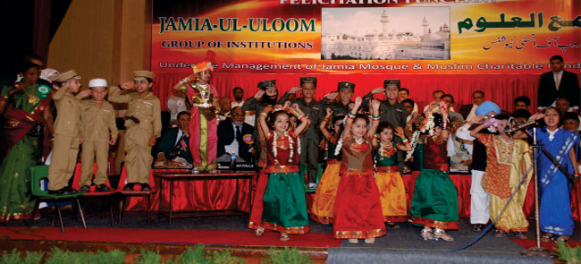
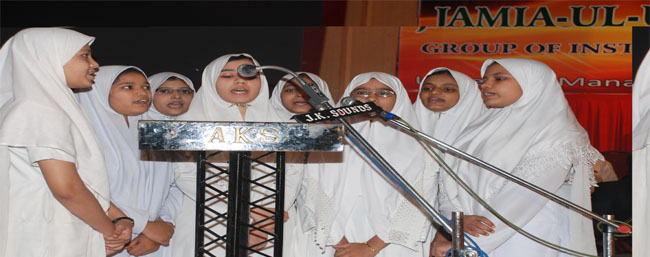
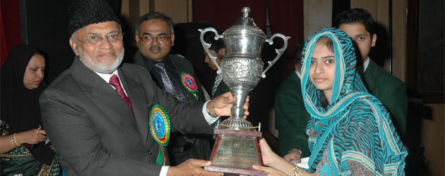
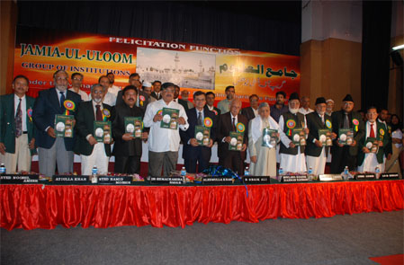
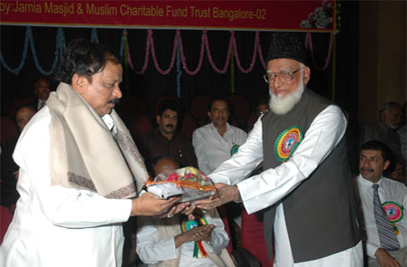
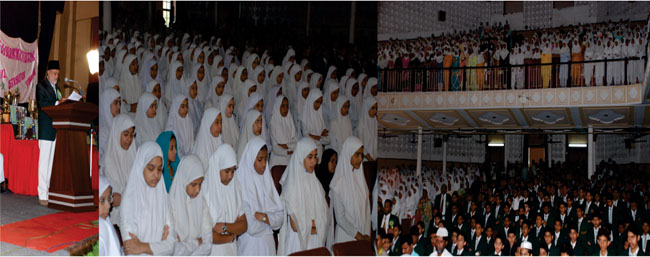
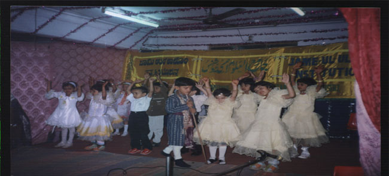
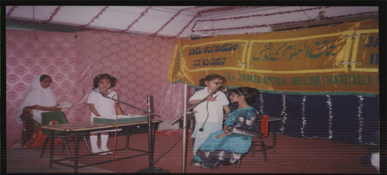

Home / Students
Extra-Curricular Activities & Activity Calendar
All-round personality development is a central goal of education at Jame-ul-Uloom. Alongside academics, students participate in quizzes, debates, fancy dress, painting, needlework, clay modelling, and creative writing to cultivate their talents, and represent the institution in inter-school and DHIE competitions.
Teachers’ Day, Children’s Day, and national festivals such as Independence Day and Republic Day provide further stages for students across all divisions to showcase their abilities.
Activities in pictures
Sports, house competitions and annual-day programmes at the Banikuppa residential campus.

Group drill on the sports groundBanikuppa residential campus 
Sports day winners and athleticsBanikuppa residential campus 
House competitionsBanikuppa residential campus 
Annual day programmeBanikuppa residential campus
Functions and programmes
Photographs of programmes of the institutions, from the Activities and Auditorium pages.

School programme 
School programme 
Prize distribution 
Function of the institutions 
Function of the institutions 
College programme 
Nursery programme 
Nursery programme
More photographs: Auditorium · Sports.
Annual Activity Calendar (June – January)
| Month | School Division | Schedule Window | Competition / Event |
|---|---|---|---|
| June | — | — | School reopens |
| July | Lower Primary School Higher Primary School High School | Third week Last week Last week | Hamd and Nath Qirath / Hamd / Nath Hamd and Nath |
| August | Lower Primary School Higher Primary School High School | Third week Last week Last week | Art & Drawing Needle Work Creative Writing |
| September | Lower Primary School Higher Primary School High School | Third week Last week Last week | Paper Folding Fabric Painting Clay Modelling |
| October | Kinder Garden Lower Primary School Higher Primary School High School | Second week Third week Last week Last week | Recitation Recitation Arabic Quiz Arabic Quiz |
| November | Lower Primary School Higher Primary School High School | Third week Last week Last week | Clay Modeling Science Quiz Science Quiz |
| December | Kinder Garden Lower Primary School Higher Primary School High School | To be announced | Hamd and Nath Literary Competition |
| January | Kinder Garden Lower Primary School Higher Primary School Higher Primary Boys School High School Boys High School Girls | Second week Third week Third week Last week Last week Last week | Fancy Dress Fancy Dress Fancy Dress Mono Acting Mehendi Designs Mehendi Designing |
For residential school house competitions and athletics at the Banikuppa campus, see Banikuppa Co-Curricular Activities & Sports.